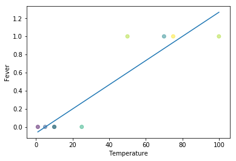
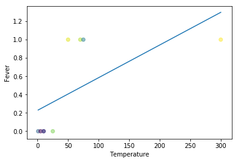
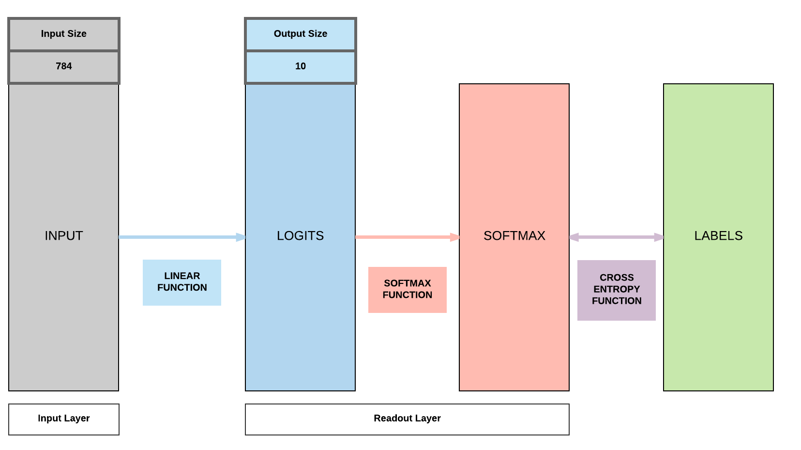
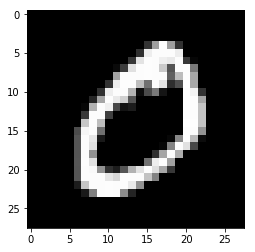
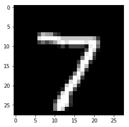
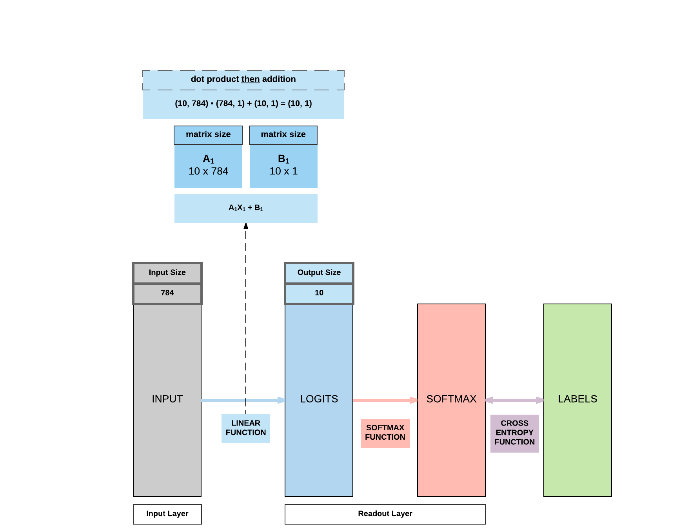

Logistic Regression with PyTorch¶
Run Jupyter Notebook
You can run the code for this section in this jupyter notebook link.
About Logistic Regression¶
Logistic Regression Basics¶
Classification algorithm¶
- Example: Spam vs No Spam
- Input: Bunch of words
- Output: Probability spam or not
Basic Comparison¶
- Linear regression
- Output: numeric value given inputs
- Logistic regression:
- Output: probability [0, 1] given input belonging to a class
Input/Output Comparison¶
- Linear regression: Multiplication
- Input: [1]
- Output: 2
- Input: [2]
- Output: 4
- Trying to model the relationship
y = 2x
- Input: [1]
- Logistic regression: Spam
- Input: "Sign up to get 1 million dollars by tonight"
- Output: p = 0.8
- Input: "This is a receipt for your recent purchase with Amazon"
- Output: p = 0.3
- p: probability it is spam
- Input: "Sign up to get 1 million dollars by tonight"
Problems of Linear Regression¶
- Example
- Fever
- Input: temperature
- Output: fever or no fever
- Remember
- Linear regression: minimize error between points and line
Linear Regression Problem 1: Fever value can go negative (below 0) and positive (above 1)
If you simply tried to do a simple linear regression on this fever problem, you would realize an apparent error. Fever can go beyond 1 and below 0 which does not make sense in this context.
import numpy as np
import matplotlib.pyplot as plt
%matplotlib inline
x = [1, 5, 10, 10, 25, 50, 70, 75, 100,]
y = [0, 0, 0, 0, 0, 1, 1, 1, 1]
colors = np.random.rand(len(x))
plt.plot(np.unique(x), np.poly1d(np.polyfit(x, y, 1))(np.unique(x)))
plt.ylabel("Fever")
plt.xlabel("Temperature")
plt.scatter(x, y, c=colors, alpha=0.5)
plt.show()

Linear Regression Problem 2: Fever points are not predicted with the presence of outliers
Previously at least some points could be properly predicted. However, with the presence of outliers, everything goes wonky for simple linear regression, having no predictive capacity at all.
import numpy as np
import matplotlib.pyplot as plt
x = [1, 5, 10, 10, 25, 50, 70, 75, 300]
y = [0, 0, 0, 0, 0, 1, 1, 1, 1]
colors = np.random.rand(len(x))
plt.plot(np.unique(x), np.poly1d(np.polyfit(x, y, 1))(np.unique(x)))
plt.ylabel("Fever")
plt.xlabel("Temperature")
plt.scatter(x, y, c=colors, alpha=0.5)
plt.show()

Logistic Regression In-Depth¶
Predicting Probability¶
- Linear regression doesn't work
- Instead of predicting direct values: predict probability

Logistic Function g()¶
- "Two-class logistic regression"
- \boldsymbol{y} = A\boldsymbol{x} + \boldsymbol{b}
- Where \boldsymbol{y} is a vector comprising the 2-class prediction y_0 and y_1
- Where the labels are y_0 = 0 and y_1 = 1
- Also, it's bolded because it's a vector, not a matrix.
- g(y_1) = \frac {1} {1 + e^{-y_1}}
- g(y_1) = Estimated probability that y = 1
- g(y_0) = 1 - g(y_1)
- g(y_0) = Estimated probability that y = 0
- For our illustration above, we have 4 classes, so we have to use softmax function explained below
Softmax Function g()¶
- "Multi-class logistic regression"
- Generalization of logistic function, where you can derive back to the logistic function if you've a 2 class classification problem
- Here, we will use a 4 class example (K = 4) as shown above to be very clear in how it relates back to that simple examaple.
- \boldsymbol{y} = A\boldsymbol{x} + \boldsymbol{b}
- Where \boldsymbol{y} is a vector comprising the 4-class prediction y_0, y_1, y_2, y_3
- Where the 4 labels (K = 4) are y_0 = 0, y_1 = 1, y_2 = 2, y_3 = 3
- g(y_i) = \frac {e^{y_i} } {\sum^K_i e^{y_i}} where K = 4 because we have 4 classes
- To put numbers to this equation in relation to the illustration above where we've y_0 = 1.3, y_1 = 1.2, y = 4.5, y = 4.8
- g(y_0) = \frac {e^{1.3}}{e^{1.3} + e^{1.2} + e^{4.5} + e^{4.8}} = 0.017
- g(y_1) = \frac {e^{1.2}}{e^{1.3} + e^{1.2} + e^{4.5} + e^{4.8}} = 0.015
- g(y_2) = \frac {e^{4.5}}{e^{1.3} + e^{1.2} + e^{4.5} + e^{4.8}} = 0.412
- g(y_3) = \frac {e^{4.8}}{e^{1.3} + e^{1.2} + e^{4.5} + e^{4.8}} = 0.556
- g(y_0) + g(y_1) + g(y_2) + g(y_3) = 1.0
- All softmax outputs have to sum to one as they represent a probability distribution over K classes.
- To put numbers to this equation in relation to the illustration above where we've y_0 = 1.3, y_1 = 1.2, y = 4.5, y = 4.8
- Take note how these numbers are not exactly as in the illustration in the softmax box but the concept is important (intentionally made so).
- y_0 and y_1 are approximately similar in values and they return similar probabilities.
- Similarly, y_2 and y_3 are approximately similar in values and they return similar probabilities.
Softmax versus Soft(arg)max
Do you know many researchers and anyone in deep learning in general use the term softmax when it should be soft(arg)max.
This is because soft(arg)max returns the probability distribution over K classes, a vector.
However, softmax only returns the max! This means you will be getting a scalar value versus a probability distribution.
According to my friend, Alfredo Canziani (postdoc in NYU under Yann Lecun), it was actually a mistake made in the original paper previously but it was too late because the term softmax was adopted. Full credits to him for this tip.
Cross Entropy Function D() for 2 Class¶
- Take note that here, S is our softmax outputs and L are our labels
- D(S, L) = -(L log S + (1-L)log(1-S))
- If L = 0 (label)
- D(S, 0) = - log(1-S)
- - log(1-S): less positive if S \longrightarrow 0
- - log(1-S): more positive if S \longrightarrow 1 (BIGGER LOSS)
- D(S, 0) = - log(1-S)
- If L = 1 (label)
- D(S, 1) = - log S
- -log(S): less positive if S \longrightarrow 1
- -log(S): more positive if S \longrightarrow 0 (BIGGER LOSS)
- D(S, 1) = - log S
- If L = 0 (label)
Numerical example of bigger or small loss
You get a small error of 1e-5 if your label = 0 and your S is closer to 0 (very correct prediction).
import math
print(-math.log(1 - 0.00001))
You get a large error of 11.51 if your label is 0 and S is near to 1 (very wrong prediction).
print(-math.log(1 - 0.99999))
You get a small error of -1e-5 if your label is 1 and S is near 1 (very correct prediction).
print(-math.log(0.99999))
You get a big error of -11.51 if your label is 1 and S is near 0 (very wrong prediction).
print(-math.log(0.00001))
1.0000050000287824e-05
11.51292546497478
1.0000050000287824e-05
11.512925464970229
Cross Entropy Function D() for More Than 2 Class¶
- For the case where we have more than 2 class, we need a more generalized function
- D(S, L) = - \sum^K_1 L_i log(S_i)
- K: number of classes
- L_i: label of i-th class, 1 if that's the class else 0
- S_i: output of softmax for i-th class
Cross Entropy Loss over N samples¶
- Goal: Minimizing Cross Entropy Loss, L
- Loss = \frac {1}{N} \sum_j^N D_j
- D_j: j-th sample of cross entropy function D(S, L)
- N: number of samples
- Loss: average cross entropy loss over N samples
Building a Logistic Regression Model with PyTorch¶

Steps¶
- Step 1: Load Dataset
- Step 2: Make Dataset Iterable
- Step 3: Create Model Class
- Step 4: Instantiate Model Class
- Step 5: Instantiate Loss Class
- Step 6: Instantiate Optimizer Class
- Step 7: Train Model
Step 1a: Loading MNIST Train Dataset¶
Images from 1 to 9
Inspect length of training dataset
You can easily load MNIST dataset with PyTorch. Here we inspect the training set, where our algorithms will learn from, and you will discover it is made up of 60,000 images.
import torch
import torch.nn as nn
import torchvision.transforms as transforms
import torchvision.datasets as dsets
train_dataset = dsets.MNIST(root='./data',
train=True,
transform=transforms.ToTensor(),
download=True)
len(train_dataset)
60000
Inspecting a single image
So this is how a single image is represented in numbers. It's actually a 28 pixel x 28 pixel image which is why you would end up with this 28x28 matrix of numbers.
train_dataset[0]
(tensor([[[ 0.0000, 0.0000, 0.0000, 0.0000, 0.0000, 0.0000, 0.0000,
0.0000, 0.0000, 0.0000, 0.0000, 0.0000, 0.0000, 0.0000,
0.0000, 0.0000, 0.0000, 0.0000, 0.0000, 0.0000, 0.0000,
0.0000, 0.0000, 0.0000, 0.0000, 0.0000, 0.0000, 0.0000],
[ 0.0000, 0.0000, 0.0000, 0.0000, 0.0000, 0.0000, 0.0000,
0.0000, 0.0000, 0.0000, 0.0000, 0.0000, 0.0000, 0.0000,
0.0000, 0.0000, 0.0000, 0.0000, 0.0000, 0.0000, 0.0000,
0.0000, 0.0000, 0.0000, 0.0000, 0.0000, 0.0000, 0.0000],
[ 0.0000, 0.0000, 0.0000, 0.0000, 0.0000, 0.0000, 0.0000,
0.0000, 0.0000, 0.0000, 0.0000, 0.0000, 0.0000, 0.0000,
0.0000, 0.0000, 0.0000, 0.0000, 0.0000, 0.0000, 0.0000,
0.0000, 0.0000, 0.0000, 0.0000, 0.0000, 0.0000, 0.0000],
[ 0.0000, 0.0000, 0.0000, 0.0000, 0.0000, 0.0000, 0.0000,
0.0000, 0.0000, 0.0000, 0.0000, 0.0000, 0.0000, 0.0000,
0.0000, 0.0000, 0.0000, 0.0000, 0.0000, 0.0000, 0.0000,
0.0000, 0.0000, 0.0000, 0.0000, 0.0000, 0.0000, 0.0000],
[ 0.0000, 0.0000, 0.0000, 0.0000, 0.0000, 0.0000, 0.0000,
0.0000, 0.0000, 0.0000, 0.0000, 0.0000, 0.0000, 0.0000,
0.0000, 0.0000, 0.0000, 0.0000, 0.0000, 0.0000, 0.0000,
0.0000, 0.0000, 0.0000, 0.0000, 0.0000, 0.0000, 0.0000],
[ 0.0000, 0.0000, 0.0000, 0.0000, 0.0000, 0.0000, 0.0000,
0.0000, 0.0000, 0.0000, 0.0000, 0.0000, 0.0118, 0.0706,
0.0706, 0.0706, 0.4941, 0.5333, 0.6863, 0.1020, 0.6510,
1.0000, 0.9686, 0.4980, 0.0000, 0.0000, 0.0000, 0.0000],
[ 0.0000, 0.0000, 0.0000, 0.0000, 0.0000, 0.0000, 0.0000,
0.0000, 0.1176, 0.1412, 0.3686, 0.6039, 0.6667, 0.9922,
0.9922, 0.9922, 0.9922, 0.9922, 0.8824, 0.6745, 0.9922,
0.9490, 0.7647, 0.2510, 0.0000, 0.0000, 0.0000, 0.0000],
[ 0.0000, 0.0000, 0.0000, 0.0000, 0.0000, 0.0000, 0.0000,
0.1922, 0.9333, 0.9922, 0.9922, 0.9922, 0.9922, 0.9922,
0.9922, 0.9922, 0.9922, 0.9843, 0.3647, 0.3216, 0.3216,
0.2196, 0.1529, 0.0000, 0.0000, 0.0000, 0.0000, 0.0000],
[ 0.0000, 0.0000, 0.0000, 0.0000, 0.0000, 0.0000, 0.0000,
0.0706, 0.8588, 0.9922, 0.9922, 0.9922, 0.9922, 0.9922,
0.7765, 0.7137, 0.9686, 0.9451, 0.0000, 0.0000, 0.0000,
0.0000, 0.0000, 0.0000, 0.0000, 0.0000, 0.0000, 0.0000],
[ 0.0000, 0.0000, 0.0000, 0.0000, 0.0000, 0.0000, 0.0000,
0.0000, 0.3137, 0.6118, 0.4196, 0.9922, 0.9922, 0.8039,
0.0431, 0.0000, 0.1686, 0.6039, 0.0000, 0.0000, 0.0000,
0.0000, 0.0000, 0.0000, 0.0000, 0.0000, 0.0000, 0.0000],
[ 0.0000, 0.0000, 0.0000, 0.0000, 0.0000, 0.0000, 0.0000,
0.0000, 0.0000, 0.0549, 0.0039, 0.6039, 0.9922, 0.3529,
0.0000, 0.0000, 0.0000, 0.0000, 0.0000, 0.0000, 0.0000,
0.0000, 0.0000, 0.0000, 0.0000, 0.0000, 0.0000, 0.0000],
[ 0.0000, 0.0000, 0.0000, 0.0000, 0.0000, 0.0000, 0.0000,
0.0000, 0.0000, 0.0000, 0.0000, 0.5451, 0.9922, 0.7451,
0.0078, 0.0000, 0.0000, 0.0000, 0.0000, 0.0000, 0.0000,
0.0000, 0.0000, 0.0000, 0.0000, 0.0000, 0.0000, 0.0000],
[ 0.0000, 0.0000, 0.0000, 0.0000, 0.0000, 0.0000, 0.0000,
0.0000, 0.0000, 0.0000, 0.0000, 0.0431, 0.7451, 0.9922,
0.2745, 0.0000, 0.0000, 0.0000, 0.0000, 0.0000, 0.0000,
0.0000, 0.0000, 0.0000, 0.0000, 0.0000, 0.0000, 0.0000],
[ 0.0000, 0.0000, 0.0000, 0.0000, 0.0000, 0.0000, 0.0000,
0.0000, 0.0000, 0.0000, 0.0000, 0.0000, 0.1373, 0.9451,
0.8824, 0.6275, 0.4235, 0.0039, 0.0000, 0.0000, 0.0000,
0.0000, 0.0000, 0.0000, 0.0000, 0.0000, 0.0000, 0.0000],
[ 0.0000, 0.0000, 0.0000, 0.0000, 0.0000, 0.0000, 0.0000,
0.0000, 0.0000, 0.0000, 0.0000, 0.0000, 0.0000, 0.3176,
0.9412, 0.9922, 0.9922, 0.4667, 0.0980, 0.0000, 0.0000,
0.0000, 0.0000, 0.0000, 0.0000, 0.0000, 0.0000, 0.0000],
[ 0.0000, 0.0000, 0.0000, 0.0000, 0.0000, 0.0000, 0.0000,
0.0000, 0.0000, 0.0000, 0.0000, 0.0000, 0.0000, 0.0000,
0.1765, 0.7294, 0.9922, 0.9922, 0.5882, 0.1059, 0.0000,
0.0000, 0.0000, 0.0000, 0.0000, 0.0000, 0.0000, 0.0000],
[ 0.0000, 0.0000, 0.0000, 0.0000, 0.0000, 0.0000, 0.0000,
0.0000, 0.0000, 0.0000, 0.0000, 0.0000, 0.0000, 0.0000,
0.0000, 0.0627, 0.3647, 0.9882, 0.9922, 0.7333, 0.0000,
0.0000, 0.0000, 0.0000, 0.0000, 0.0000, 0.0000, 0.0000],
[ 0.0000, 0.0000, 0.0000, 0.0000, 0.0000, 0.0000, 0.0000,
0.0000, 0.0000, 0.0000, 0.0000, 0.0000, 0.0000, 0.0000,
0.0000, 0.0000, 0.0000, 0.9765, 0.9922, 0.9765, 0.2510,
0.0000, 0.0000, 0.0000, 0.0000, 0.0000, 0.0000, 0.0000],
[ 0.0000, 0.0000, 0.0000, 0.0000, 0.0000, 0.0000, 0.0000,
0.0000, 0.0000, 0.0000, 0.0000, 0.0000, 0.0000, 0.0000,
0.1804, 0.5098, 0.7176, 0.9922, 0.9922, 0.8118, 0.0078,
0.0000, 0.0000, 0.0000, 0.0000, 0.0000, 0.0000, 0.0000],
[ 0.0000, 0.0000, 0.0000, 0.0000, 0.0000, 0.0000, 0.0000,
0.0000, 0.0000, 0.0000, 0.0000, 0.0000, 0.1529, 0.5804,
0.8980, 0.9922, 0.9922, 0.9922, 0.9804, 0.7137, 0.0000,
0.0000, 0.0000, 0.0000, 0.0000, 0.0000, 0.0000, 0.0000],
[ 0.0000, 0.0000, 0.0000, 0.0000, 0.0000, 0.0000, 0.0000,
0.0000, 0.0000, 0.0000, 0.0941, 0.4471, 0.8667, 0.9922,
0.9922, 0.9922, 0.9922, 0.7882, 0.3059, 0.0000, 0.0000,
0.0000, 0.0000, 0.0000, 0.0000, 0.0000, 0.0000, 0.0000],
[ 0.0000, 0.0000, 0.0000, 0.0000, 0.0000, 0.0000, 0.0000,
0.0000, 0.0902, 0.2588, 0.8353, 0.9922, 0.9922, 0.9922,
0.9922, 0.7765, 0.3176, 0.0078, 0.0000, 0.0000, 0.0000,
0.0000, 0.0000, 0.0000, 0.0000, 0.0000, 0.0000, 0.0000],
[ 0.0000, 0.0000, 0.0000, 0.0000, 0.0000, 0.0000, 0.0706,
0.6706, 0.8588, 0.9922, 0.9922, 0.9922, 0.9922, 0.7647,
0.3137, 0.0353, 0.0000, 0.0000, 0.0000, 0.0000, 0.0000,
0.0000, 0.0000, 0.0000, 0.0000, 0.0000, 0.0000, 0.0000],
[ 0.0000, 0.0000, 0.0000, 0.0000, 0.2157, 0.6745, 0.8863,
0.9922, 0.9922, 0.9922, 0.9922, 0.9569, 0.5216, 0.0431,
0.0000, 0.0000, 0.0000, 0.0000, 0.0000, 0.0000, 0.0000,
0.0000, 0.0000, 0.0000, 0.0000, 0.0000, 0.0000, 0.0000],
[ 0.0000, 0.0000, 0.0000, 0.0000, 0.5333, 0.9922, 0.9922,
0.9922, 0.8314, 0.5294, 0.5176, 0.0627, 0.0000, 0.0000,
0.0000, 0.0000, 0.0000, 0.0000, 0.0000, 0.0000, 0.0000,
0.0000, 0.0000, 0.0000, 0.0000, 0.0000, 0.0000, 0.0000],
[ 0.0000, 0.0000, 0.0000, 0.0000, 0.0000, 0.0000, 0.0000,
0.0000, 0.0000, 0.0000, 0.0000, 0.0000, 0.0000, 0.0000,
0.0000, 0.0000, 0.0000, 0.0000, 0.0000, 0.0000, 0.0000,
0.0000, 0.0000, 0.0000, 0.0000, 0.0000, 0.0000, 0.0000],
[ 0.0000, 0.0000, 0.0000, 0.0000, 0.0000, 0.0000, 0.0000,
0.0000, 0.0000, 0.0000, 0.0000, 0.0000, 0.0000, 0.0000,
0.0000, 0.0000, 0.0000, 0.0000, 0.0000, 0.0000, 0.0000,
0.0000, 0.0000, 0.0000, 0.0000, 0.0000, 0.0000, 0.0000],
[ 0.0000, 0.0000, 0.0000, 0.0000, 0.0000, 0.0000, 0.0000,
0.0000, 0.0000, 0.0000, 0.0000, 0.0000, 0.0000, 0.0000,
0.0000, 0.0000, 0.0000, 0.0000, 0.0000, 0.0000, 0.0000,
0.0000, 0.0000, 0.0000, 0.0000, 0.0000, 0.0000, 0.0000]]]),
tensor(5))
Inspecting a single data point in the training dataset
When you load MNIST dataset, each data point is actually a tuple containing the image matrix and the label.
type(train_dataset[0])
tuple
Inspecting training dataset first element of tuple
This means to access the image, you need to access the first element in the tuple.
# Input Matrix
train_dataset[0][0].size()
# A 28x28 sized image of a digit
torch.Size([1, 28, 28])
Inspecting training dataset second element of tuple
The second element actually represents the image's label. Meaning if the second element says 5, it means the 28x28 matrix of numbers represent a digit 5.
# Label
train_dataset[0][1]
tensor(5)
Displaying MNIST¶
Verifying shape of MNIST image
As mentioned, a single MNIST image is of the shape 28 pixel x 28 pixel.
import matplotlib.pyplot as plt
%matplotlib inline
import numpy as np
train_dataset[0][0].numpy().shape
(1, 28, 28)
Plot image of MNIST image
show_img = train_dataset[0][0].numpy().reshape(28, 28)
plt.imshow(show_img, cmap='gray')

Second element of tuple shows label
As you would expect, the label is 5.
# Label
train_dataset[0][1]
tensor(5)
Plot second image of MNIST image
show_img = train_dataset[1][0].numpy().reshape(28, 28)
plt.imshow(show_img, cmap='gray')

Second element of tuple shows label
We should see 0 here as the label.
# Label
train_dataset[1][1]
tensor(0)
Step 1b: Loading MNIST Test Dataset¶
- Show our algorithm works beyond the data we have trained on.
- Out-of-sample
Load test dataset
Compared to the 60k images in the training set, the testing set where the model will not be trained on has 10k images to check for its out-of-sample performance.
test_dataset = dsets.MNIST(root='./data',
train=False,
transform=transforms.ToTensor())
len(test_dataset)
10000
Test dataset elements
Exactly like the training set, the testing set has 10k tuples containing the 28x28 matrices and their respective labels.
type(test_dataset[0])
tuple
Test dataset first element in tuple
This contains the image matrix, similar to the training set.
# Image matrix
test_dataset[0][0].size()
torch.Size([1, 28, 28])
Plot image sample from test dataset
show_img = test_dataset[0][0].numpy().reshape(28, 28)
plt.imshow(show_img, cmap='gray')

Test dataset second element in tuple
# Label
test_dataset[0][1]
tensor(7)
Step 2: Make Dataset Iterable¶
- Aim: make the dataset iterable
- totaldata: 60000
- minibatch: 100
- Number of examples in 1 iteration
- iterations: 3000
- 1 iteration: one mini-batch forward & backward pass
- epochs
- 1 epoch: running through the whole dataset once
- epochs = iterations \div \frac{totaldata}{minibatch} = 3000 \div \frac{60000}{100} = 5
Recap training dataset
Remember training dataset has 60k images and testing dataset has 10k images.
len(train_dataset)
60000
Defining epochs
When the model goes through the whole 60k images once, learning how to classify 0-9, it's consider 1 epoch.
However, there's a concept of batch size where it means the model would look at 100 images before updating the model's weights, thereby learning. When the model updates its weights (parameters) after looking at all the images, this is considered 1 iteration.
batch_size = 100
We arbitrarily set 3000 iterations here which means the model would update 3000 times.
n_iters = 3000
One epoch consists of 60,000 / 100 = 600 iterations. Because we would like to go through 3000 iterations, this implies we would have 3000 / 600 = 5 epochs as each epoch has 600 iterations.
num_epochs = n_iters / (len(train_dataset) / batch_size)
num_epochs = int(num_epochs)
num_epochs
5
Create Iterable Object: Training Dataset
train_loader = torch.utils.data.DataLoader(dataset=train_dataset,
batch_size=batch_size,
shuffle=True)
Check Iterability
import collections
isinstance(train_loader, collections.Iterable)
True
Create Iterable Object: Testing Dataset
# Iterable object
test_loader = torch.utils.data.DataLoader(dataset=test_dataset,
batch_size=batch_size,
shuffle=False)
Check iterability of testing dataset
isinstance(test_loader, collections.Iterable)
True
Iterate through dataset
This is just a simplified example of what we're doing above where we're creating an iterable object lst to loop through so we can access all the images img_1 and img_2.
Above, the equivalent of lst is train_loader and test_loader.
img_1 = np.ones((28, 28))
img_2 = np.ones((28, 28))
lst = [img_1, img_2]
# Need to iterate
# Think of numbers as the images
for i in lst:
print(i.shape)
(28, 28)
(28, 28)
Step 3: Building Model¶
Create model class
# Same as linear regression!
class LogisticRegressionModel(nn.Module):
def __init__(self, input_dim, output_dim):
super(LogisticRegressionModel, self).__init__()
self.linear = nn.Linear(input_dim, output_dim)
def forward(self, x):
out = self.linear(x)
return out
Step 4: Instantiate Model Class¶
- Input dimension:
- Size of image
- 28 \times 28 = 784
- Output dimension: 10
- 0, 1, 2, 3, 4, 5, 6, 7, 8, 9
Check size of dataset
This should be 28x28.
# Size of images
train_dataset[0][0].size()
torch.Size([1, 28, 28])
Instantiate model class based on input and out dimensions
As we're trying to classify digits 0-9 a total of 10 classes, our output dimension is 10.
And we're feeding the model with 28x28 images, hence our input dimension is 28x28.
input_dim = 28*28
output_dim = 10
model = LogisticRegressionModel(input_dim, output_dim)
Step 5: Instantiate Loss Class¶
- Logistic Regression: Cross Entropy Loss
- Linear Regression: MSE
Create Cross Entry Loss Class
Unlike linear regression, we do not use MSE here, we need Cross Entry Loss to calculate our loss before we backpropagate and update our parameters.
criterion = nn.CrossEntropyLoss()
What happens in nn.CrossEntropyLoss()?
It does 2 things at the same time.
1. Computes softmax (logistic/softmax function)
2. Computes cross entropy
Step 6: Instantiate Optimizer Class¶
- Simplified equation
- \theta = \theta - \eta \cdot \nabla_\theta
- \theta: parameters (our variables)
- \eta: learning rate (how fast we want to learn)
- \nabla_\theta: parameters' gradients
- \theta = \theta - \eta \cdot \nabla_\theta
- Even simplier equation
parameters = parameters - learning_rate * parameters_gradients- At every iteration, we update our model's parameters
Create optimizer
Similar to what we've covered above, this calculates the parameters' gradients and update them subsequently.
learning_rate = 0.001
optimizer = torch.optim.SGD(model.parameters(), lr=learning_rate)
Parameters In-Depth
You'll realize we have 2 sets of parameters, 10x784 which is A and 10x1 which is b in the y = AX + b equation where X is our input of size 784.
We'll go into details subsequently how these parameters interact with our input to produce our 10x1 output.
# Type of parameter object
print(model.parameters())
# Length of parameters
print(len(list(model.parameters())))
# FC 1 Parameters
print(list(model.parameters())[0].size())
# FC 1 Bias Parameters
print(list(model.parameters())[1].size())
<generator object Module.parameters at 0x7ff7c884f830>
2
torch.Size([10, 784])
torch.Size([10])
Quick Matrix Product Review
- Example 1: matrix product
- A: (100, 10)
- B: (10, 1)
- A \cdot B = (100, 10) \cdot (10, 1) = (100, 1)
- Example 2: matrix product
- A: (50, 5)
- B: (5, 2)
- A \cdot B = (50, 5) \cdot (5, 2) = (50, 2)
- Example 3: element-wise addition
- A: (10, 1)
- B: (10, 1)
- A + B = (10, 1)

Step 7: Train Model¶
7 step process for training models
- Process
- Convert inputs/labels to tensors with gradients
- Clear gradient buffets
- Get output given inputs
- Get loss
- Get gradients w.r.t. parameters
- Update parameters using gradients
parameters = parameters - learning_rate * parameters_gradients
- REPEAT
iter = 0
for epoch in range(num_epochs):
for i, (images, labels) in enumerate(train_loader):
# Load images as Variable
images = images.view(-1, 28*28).requires_grad_()
labels = labels
# Clear gradients w.r.t. parameters
optimizer.zero_grad()
# Forward pass to get output/logits
outputs = model(images)
# Calculate Loss: softmax --> cross entropy loss
loss = criterion(outputs, labels)
# Getting gradients w.r.t. parameters
loss.backward()
# Updating parameters
optimizer.step()
iter += 1
if iter % 500 == 0:
# Calculate Accuracy
correct = 0
total = 0
# Iterate through test dataset
for images, labels in test_loader:
# Load images to a Torch Variable
images = images.view(-1, 28*28).requires_grad_()
# Forward pass only to get logits/output
outputs = model(images)
# Get predictions from the maximum value
_, predicted = torch.max(outputs.data, 1)
# Total number of labels
total += labels.size(0)
# Total correct predictions
correct += (predicted == labels).sum()
accuracy = 100 * correct / total
# Print Loss
print('Iteration: {}. Loss: {}. Accuracy: {}'.format(iter, loss.item(), accuracy))
Iteration: 500. Loss: 1.8513233661651611. Accuracy: 70
Iteration: 1000. Loss: 1.5732524394989014. Accuracy: 77
Iteration: 1500. Loss: 1.3840199708938599. Accuracy: 79
Iteration: 2000. Loss: 1.1711134910583496. Accuracy: 81
Iteration: 2500. Loss: 1.1094708442687988. Accuracy: 82
Iteration: 3000. Loss: 1.002761721611023. Accuracy: 82
Break Down Accuracy Calculation¶
Printing outputs of our model
As we've trained our model, we can extract the accuracy calculation portion to understand what's happening without re-training the model.
This would print out the output of the model's predictions on your notebook.
iter_test = 0
for images, labels in test_loader:
iter_test += 1
images = images.view(-1, 28*28).requires_grad_()
outputs = model(images)
if iter_test == 1:
print('OUTPUTS')
print(outputs)
_, predicted = torch.max(outputs.data, 1)
OUTPUTS
tensor([[-0.4181, -1.0784, -0.4840, -0.0985, -0.2394, -0.1801, -1.1639,
2.9352, -0.1552, 0.8852],
[ 0.5117, -0.1099, 1.5295, 0.8863, -1.8813, 0.5967, 1.3632,
-1.8977, 0.4183, -1.4990],
[-1.0126, 2.4112, 0.2373, 0.0857, -0.7007, -0.2015, -0.3428,
-0.2548, 0.1659, -0.4703],
[ 2.8072, -2.2973, -0.0984, -0.4313, -0.9619, 0.8670, 1.2201,
0.3752, -0.2873, -0.3272],
[-0.0343, -2.0043, 0.5081, -0.6452, 1.8647, -0.6924, 0.1435,
0.4330, 0.2958, 1.0339],
[-1.5392, 2.9070, 0.2297, 0.3139, -0.6863, -0.2734, -0.8377,
-0.1238, 0.3285, -0.3004],
[-1.2037, -1.3739, -0.5947, 0.3530, 1.4205, 0.0593, -0.7307,
0.6642, 0.3937, 0.8004],
[-1.4439, -0.3284, -0.7652, -0.0952, 0.9323, 0.3006, 0.0238,
-0.0810, 0.0612, 1.3295],
[ 0.5409, -0.5266, 0.9914, -1.2369, 0.6583, 0.0992, 0.8525,
-1.0562, 0.2013, 0.0462],
[-0.6548, -0.7253, -0.9825, -1.1663, 0.9076, -0.0694, -0.3708,
1.8270, 0.2457, 1.5921],
[ 3.2147, -1.7689, 0.8531, 1.2320, -0.8126, 1.1251, -0.2776,
-1.4244, 0.5930, -1.6183],
[ 0.7470, -0.5545, 1.0251, 0.0529, 0.4384, -0.5934, 0.7666,
-1.0084, 0.5313, -0.3465],
[-0.7916, -1.7064, -0.7805, -1.1588, 1.3284, -0.1708, -0.2092,
0.9495, 0.1033, 2.0208],
[ 3.0602, -2.3578, -0.2576, -0.2198, -0.2372, 0.9765, -0.1514,
-0.5380, 0.7970, 0.1374],
[-1.2613, 2.8594, -0.0874, 0.1974, -1.2018, -0.0064, -0.0923,
-0.2142, 0.2575, -0.3218],
[ 0.4348, -0.7216, 0.0021, 1.2864, -0.5062, 0.7761, -0.3236,
-0.5667, 0.5431, -0.7781],
[-0.2157, -2.0200, 0.1829, -0.6882, 1.3815, -0.7609, -0.0902,
0.8647, 0.3679, 1.8843],
[ 0.0950, -1.5009, -0.6347, 0.3662, -0.4679, -0.0359, -0.7671,
2.7155, -0.3991, 0.5737],
[-0.7005, -0.5366, -0.0434, 1.1289, -0.5873, 0.2555, 0.8187,
-0.6557, 0.1241, -0.4297],
[-1.0635, -1.5991, -0.4677, -0.1231, 2.0445, 0.1128, -0.1825,
0.1075, 0.0348, 1.4317],
[-1.0319, -0.1595, -1.3415, 0.1095, 0.5339, 0.1973, -1.3272,
1.5765, 0.4784, 1.4176],
[-0.4928, -1.5653, -0.0672, 0.3325, 0.5359, 0.5368, 2.1542,
-1.4276, 0.3605, 0.0587],
[-0.4761, 0.2958, 0.6597, -0.2658, 1.1279, -1.0676, 1.2506,
-0.2059, -0.1489, 0.1051],
[-0.0764, -0.9274, -0.6838, 0.3464, -0.2656, 1.4099, 0.4486,
-0.9527, 0.5682, 0.0156],
[-0.6900, -0.9611, 0.1395, -0.0079, 1.5424, -0.3208, -0.2682,
0.3586, -0.2771, 1.0389],
[ 4.3606, -2.8621, 0.6310, -0.9657, -0.2486, 1.2009, 1.1873,
-0.8255, -0.2103, -1.2172],
[-0.1000, -1.4268, -0.4627, -0.1041, 0.2959, -0.1392, -0.6855,
1.8622, -0.2580, 1.1347],
[-0.3625, -2.1323, -0.2224, -0.8754, 2.4684, 0.0295, 0.1161,
-0.2660, 0.3037, 1.4570],
[ 2.8688, -2.4517, 0.1782, 1.1149, -1.0898, 1.1062, -0.0681,
-0.5697, 0.8888, -0.6965],
[-1.0429, 1.4446, -0.3349, 0.1254, -0.5017, 0.2286, 0.2328,
-0.3290, 0.3949, -0.2586],
[-0.8476, -0.0004, -1.1003, 2.2806, -1.2226, 0.9251, -0.3165,
0.4957, 0.0690, 0.0232],
[-0.9108, 1.1355, -0.2715, 0.2233, -0.3681, 0.1442, -0.0001,
-0.0174, 0.1454, 0.2286],
[-1.0663, -0.8466, -0.7147, 2.5685, -0.2090, 1.2993, -0.3057,
-0.8314, 0.7046, -0.0176],
[ 1.7013, -1.8051, 0.7541, -1.5248, 0.8972, 0.1518, 1.4876,
-0.8454, -0.2022, -0.2829],
[-0.8179, -0.1239, 0.8630, -0.2137, -0.2275, -0.5411, -1.3448,
1.7354, 0.7751, 0.6234],
[ 0.6515, -1.0431, 2.7165, 0.1873, -1.0623, 0.1286, 0.3597,
-0.2739, 0.3871, -1.6699],
[-0.2828, -1.4663, 0.1182, -0.0896, -0.3640, -0.5129, -0.4905,
2.2914, -0.2227, 0.9463],
[-1.2596, 2.0468, -0.4405, -0.0411, -0.8073, 0.0490, -0.0604,
-0.1206, 0.3504, -0.1059],
[ 0.6089, 0.5885, 0.7898, 1.1318, -1.9008, 0.5875, 0.4227,
-1.1815, 0.5652, -1.3590],
[-1.4551, 2.9537, -0.2805, 0.2372, -1.4180, 0.0297, -0.1515,
-0.6111, 0.6140, -0.3354],
[-0.7182, 1.6778, 0.0553, 0.0461, -0.5446, -0.0338, -0.0215,
-0.0881, 0.1506, -0.2107],
[-0.8027, -0.7854, -0.1275, -0.3177, -0.1600, -0.1964, -0.6084,
2.1285, -0.1815, 1.1911],
[-2.0656, -0.4959, -0.1154, -0.1363, 2.2426, -0.7441, -0.8413,
0.4675, 0.3269, 1.7279],
[-0.3004, 1.0166, 1.1175, -0.0618, -0.0937, -0.4221, 0.1943,
-1.1020, 0.3670, -0.4683],
[-1.0720, 0.2252, 0.0175, 1.3644, -0.7409, 0.4655, 0.5439,
0.0380, 0.1279, -0.2302],
[ 0.2409, -1.2622, -0.6336, 1.8240, -0.5951, 1.3408, 0.2130,
-1.3789, 0.8363, -0.2101],
[-1.3849, 0.3773, -0.0585, 0.6896, -0.0998, 0.2804, 0.0696,
-0.2529, 0.3143, 0.3409],
[-0.9103, -0.1578, 1.6673, -0.4817, 0.4088, -0.5484, 0.6103,
-0.2287, -0.0665, 0.0055],
[-1.1692, -2.8531, -1.2499, -0.0257, 2.8580, 0.2616, -0.7122,
-0.0551, 0.8112, 2.3233],
[-0.2790, -1.9494, 0.6096, -0.5653, 2.2792, -1.0687, 0.1634,
0.3122, 0.1053, 1.0884],
[ 0.1267, -1.2297, -0.1315, 0.2428, -0.5436, 0.4123, 2.3060,
-0.9278, -0.1528, -0.4224],
[-0.0235, -0.9137, -0.1457, 1.6858, -0.7552, 0.7293, 0.2510,
-0.3955, -0.2187, -0.1505],
[ 0.5643, -1.2783, -1.4149, 0.0304, 0.8375, 1.5018, 0.0338,
-0.3875, -0.0117, 0.5751],
[ 0.2926, -0.7486, -0.3238, 1.0384, 0.0308, 0.6792, -0.0170,
-0.5797, 0.2819, -0.3510],
[ 0.1219, -0.5862, 1.5817, -0.1297, 0.4730, -0.9171, 0.7886,
-0.7022, -0.0501, -0.2812],
[ 1.7587, -2.4511, -0.7369, 0.4082, -0.6426, 1.1784, 0.6052,
-0.7178, 1.6161, -0.2220],
[-0.1267, -2.6719, 0.0505, -0.4972, 2.9027, -0.1461, 0.2807,
-0.2921, 0.2231, 1.1327],
[-0.9892, 2.4401, 0.1274, 0.2838, -0.7535, -0.1684, -0.6493,
-0.1908, 0.2290, -0.2150],
[-0.2071, -2.1351, -0.9191, -0.9309, 1.7747, -0.3046, 0.0183,
1.0136, -0.1016, 2.1288],
[-0.0103, 0.3280, -0.6974, -0.2504, 0.3187, 0.4390, -0.1879,
0.3954, 0.2332, -0.1971],
[-0.2280, -1.6754, -0.7438, 0.5078, 0.2544, -0.1020, -0.2503,
2.0799, -0.5033, 0.5890],
[ 0.3972, -0.9369, 1.2696, -1.6713, -0.4159, -0.0221, 0.6489,
-0.4777, 1.2497, 0.3931],
[-0.7566, -0.8230, -0.0785, -0.3083, 0.7821, 0.1880, 0.1037,
-0.0956, 0.4219, 1.0798],
[-1.0328, -0.1700, 1.3806, 0.5445, -0.2624, -0.0780, -0.3595,
-0.6253, 0.4309, 0.1813],
[-1.0360, -0.4704, 0.1948, -0.7066, 0.6600, -0.4633, -0.3602,
1.7494, 0.1522, 0.6086],
[-1.2032, -0.7903, -0.5754, 0.4722, 0.6068, 0.5752, 0.2151,
-0.2495, 0.3420, 0.9278],
[ 0.2247, -0.1361, 0.9374, -0.1543, 0.4921, -0.6553, 0.5885,
0.2617, -0.2216, -0.3736],
[-0.2867, -1.4486, 0.6658, -0.8755, 2.3195, -0.7627, -0.2132,
0.2488, 0.3484, 1.0860],
[-1.4031, -0.4518, -0.3181, 2.8268, -0.5371, 1.0154, -0.9247,
-0.7385, 1.1031, 0.0422],
[ 2.8604, -1.5413, 0.6241, -0.8017, -1.4104, 0.6314, 0.4614,
-0.0218, -0.3411, -0.2609],
[ 0.2113, -1.2348, -0.8535, -0.1041, -0.2703, -0.1294, -0.7057,
2.7552, -0.4429, 0.4517],
[ 4.5191, -2.7407, 1.1091, 0.3975, -0.9456, 1.2277, 0.3616,
-1.6564, 0.5063, -1.4274],
[ 1.4615, -1.0765, 1.8388, 1.5006, -1.2351, 0.2781, 0.2830,
-0.8491, 0.2222, -1.7779],
[-1.2160, 0.8502, 0.2413, -0.0798, -0.7880, -0.4286, -0.8060,
0.7194, 1.2663, 0.6412],
[-1.3318, 2.3388, -0.4003, -0.1094, -1.0285, 0.1021, -0.0388,
-0.0497, 0.5137, -0.2507],
[-1.7853, 0.5884, -0.6108, -0.5557, 0.8696, -0.6226, -0.7983,
1.7169, -0.0145, 0.8231],
[-0.1739, 0.1562, -0.2933, 2.3195, -0.9480, 1.2019, -0.4834,
-1.0567, 0.5685, -0.6841],
[-0.7920, -0.3339, 0.7452, -0.6529, -0.3307, -0.6092, -0.0950,
1.7311, -0.3481, 0.3801],
[-1.7810, 1.0676, -0.7611, 0.3658, -0.0431, -0.1012, -0.6048,
0.3089, 0.9998, 0.7164],
[-0.5856, -0.5261, -0.4859, -1.0551, -0.1838, -0.2144, -1.2599,
3.3891, 0.4691, 0.7566],
[-0.4984, -1.7770, -1.1998, -0.1075, 1.0882, 0.4539, -0.5651,
1.4381, -0.5678, 1.7479],
[ 0.2938, -1.8536, 0.4259, -0.5429, 0.0066, 0.4120, 2.3793,
-0.3666, -0.2604, 0.0382],
[-0.4080, -0.9851, 4.0264, 0.1099, -0.1766, -1.1557, 0.6419,
-0.8147, 0.7535, -1.1452],
[-0.4636, -1.7323, -0.6433, -0.0274, 0.7227, -0.1799, -0.9336,
2.1881, -0.2073, 1.6522],
[-0.9617, -0.0348, -0.3980, -0.4738, 0.7790, 0.4671, -0.6115,
-0.7067, 1.3036, 0.4923],
[-1.0151, -2.5385, -0.6072, 0.2902, 3.1570, 0.1062, -0.2169,
-0.4491, 0.6326, 1.6829],
[-1.8852, 0.6066, -0.2840, -0.4475, -0.1147, -0.7858, -1.1805,
3.0723, 0.3960, 0.9720],
[ 0.0344, -1.4878, -0.9675, 1.9649, -0.3146, 1.2183, 0.6730,
-0.3650, 0.0646, -0.0898],
[-0.2118, -2.0350, 0.9917, -0.8993, 1.2334, -0.6723, 2.5847,
-0.0454, -0.4149, 0.3927],
[-1.7365, 3.0447, 0.5115, 0.0786, -0.7544, -0.2158, -0.4876,
-0.2891, 0.5089, -0.6719],
[ 0.3652, -0.5457, -0.1167, 2.9056, -1.1622, 0.8192, -1.3245,
-0.6414, 0.8097, -0.4958],
[-0.8755, -0.6983, 0.2208, -0.6463, 0.5276, 0.1145, 2.7229,
-1.0316, 0.1905, 0.2090],
[-0.9702, 0.1265, -0.0007, -0.5106, 0.4970, -0.0804, 0.0017,
0.0607, 0.6164, 0.4490],
[-0.8271, -0.6822, -0.7434, 2.6457, -1.6143, 1.1486, -1.0705,
0.5611, 0.6422, 0.1250],
[-1.9979, 1.8175, -0.1658, -0.0343, -0.6292, 0.1774, 0.3150,
-0.4633, 0.9266, 0.0252],
[-0.9039, -0.6030, -0.2173, -1.1768, 2.3198, -0.5072, 0.3418,
-0.1551, 0.1282, 1.4250],
[-0.9891, 0.5212, -0.4518, 0.3267, -0.0759, 0.3826, -0.0341,
0.0382, 0.2451, 0.3658],
[-2.1217, 1.5102, -0.7828, 0.3554, -0.4192, -0.0772, 0.0578,
0.8070, 0.1701, 0.5880],
[ 1.0665, -1.3826, 0.6243, -0.8096, -0.4227, 0.5925, 1.8112,
-0.9946, 0.2010, -0.7731],
[-1.1263, -1.7484, 0.0041, -0.5439, 1.7242, -0.9475, -0.3835,
0.8452, 0.3077, 2.2689]])
Printing output size
This produces a 100x10 matrix because each iteration has a batch size of 100 and each prediction across the 10 classes, with the largest number indicating the likely number it is predicting.
iter_test = 0
for images, labels in test_loader:
iter_test += 1
images = images.view(-1, 28*28).requires_grad_()
outputs = model(images)
if iter_test == 1:
print('OUTPUTS')
print(outputs.size())
_, predicted = torch.max(outputs.data, 1)
OUTPUTS
torch.Size([100, 10])
Printing one output
This would be a 1x10 matrix where the largest number is what the model thinks the image is. Here we can see that in the tensor, position 7 has the largest number, indicating the model thinks the image is 7.
number 0: -0.4181
number 1: -1.0784
...
number 7: 2.9352
iter_test = 0
for images, labels in test_loader:
iter_test += 1
images = images.view(-1, 28*28).requires_grad_()
outputs = model(images)
if iter_test == 1:
print('OUTPUTS')
print(outputs[0, :])
_, predicted = torch.max(outputs.data, 1)
OUTPUTS
tensor([-0.4181, -1.0784, -0.4840, -0.0985, -0.2394, -0.1801, -1.1639,
2.9352, -0.1552, 0.8852])
Printing prediction output
Because our output is of size 100 (our batch size), our prediction size would also of the size 100.
iter_test = 0
for images, labels in test_loader:
iter_test += 1
images = images.view(-1, 28*28).requires_grad_()
outputs = model(images)
_, predicted = torch.max(outputs.data, 1)
if iter_test == 1:
print('PREDICTION')
print(predicted.size())
PREDICTION
torch.Size([100])
Print prediction value
We are printing our prediction which as verified above, should be digit 7.
iter_test = 0
for images, labels in test_loader:
iter_test += 1
images = images.view(-1, 28*28).requires_grad_()
outputs = model(images)
_, predicted = torch.max(outputs.data, 1)
if iter_test == 1:
print('PREDICTION')
print(predicted[0])
PREDICTION
tensor(7)
Print prediction, label and label size
We are trying to show what we are predicting and the actual values. In this case, we're predicting the right value 7!
iter_test = 0
for images, labels in test_loader:
iter_test += 1
images = images.view(-1, 28*28).requires_grad_()
outputs = model(images)
_, predicted = torch.max(outputs.data, 1)
if iter_test == 1:
print('PREDICTION')
print(predicted[0])
print('LABEL SIZE')
print(labels.size())
print('LABEL FOR IMAGE 0')
print(labels[0])
PREDICTION
tensor(7)
LABEL SIZE
torch.Size([100])
LABEL FOR IMAGE 0
tensor(7)
Print second prediction and ground truth
Again, the prediction is correct. Naturally, as our model is quite competent in this simple task.
iter_test = 0
for images, labels in test_loader:
iter_test += 1
images = images.view(-1, 28*28).requires_grad_()
outputs = model(images)
_, predicted = torch.max(outputs.data, 1)
if iter_test == 1:
print('PREDICTION')
print(predicted[1])
print('LABEL SIZE')
print(labels.size())
print('LABEL FOR IMAGE 1')
print(labels[1])
PREDICTION
tensor(2)
LABEL SIZE
torch.Size([100])
LABEL FOR IMAGE 1
tensor(2)
Print accuracy
Now we know what each object represents, we can understand how we arrived at our accuracy numbers.
One last thing to note is that correct.item() has this syntax is because correct is a PyTorch tensor and to get the value to compute with total which is an integer, we need to do this.
correct = 0
total = 0
iter_test = 0
for images, labels in test_loader:
iter_test += 1
images = images.view(-1, 28*28).requires_grad_()
outputs = model(images)
_, predicted = torch.max(outputs.data, 1)
# Total number of labels
total += labels.size(0)
# Total correct predictions
correct += (predicted == labels).sum()
accuracy = 100 * (correct.item() / total)
print(accuracy)
82.94
Explanation of Python's .sum() function
Python's .sum() function allows you to do a comparison between two matrices and sum the ones that return True or in our case, those predictions that match actual labels (correct predictions).
# Explaining .sum() python built-in function
# correct += (predicted == labels).sum()
import numpy as np
a = np.ones((10))
print(a)
b = np.ones((10))
print(b)
print(a == b)
print((a == b).sum())
# matrix a
[1. 1. 1. 1. 1. 1. 1. 1. 1. 1.]
# matrix b
[1. 1. 1. 1. 1. 1. 1. 1. 1. 1.]
# boolean array
[ True True True True True True True True True True]
# number of elementswhere a matches b
10
Saving Model¶
Saving PyTorch model
This is how you save your model. Feel free to just change save_model = True to save your model
save_model = False
if save_model is True:
# Saves only parameters
torch.save(model.state_dict(), 'awesome_model.pkl')
Building a Logistic Regression Model with PyTorch (GPU)¶
CPU version
The usual 7-step process, getting repetitive by now which we like.
import torch
import torch.nn as nn
import torchvision.transforms as transforms
import torchvision.datasets as dsets
'''
STEP 1: LOADING DATASET
'''
train_dataset = dsets.MNIST(root='./data',
train=True,
transform=transforms.ToTensor(),
download=True)
test_dataset = dsets.MNIST(root='./data',
train=False,
transform=transforms.ToTensor())
'''
STEP 2: MAKING DATASET ITERABLE
'''
batch_size = 100
n_iters = 3000
num_epochs = n_iters / (len(train_dataset) / batch_size)
num_epochs = int(num_epochs)
train_loader = torch.utils.data.DataLoader(dataset=train_dataset,
batch_size=batch_size,
shuffle=True)
test_loader = torch.utils.data.DataLoader(dataset=test_dataset,
batch_size=batch_size,
shuffle=False)
'''
STEP 3: CREATE MODEL CLASS
'''
class LogisticRegressionModel(nn.Module):
def __init__(self, input_size, num_classes):
super(LogisticRegressionModel, self).__init__()
self.linear = nn.Linear(input_dim, output_dim)
def forward(self, x):
out = self.linear(x)
return out
'''
STEP 4: INSTANTIATE MODEL CLASS
'''
input_dim = 28*28
output_dim = 10
model = LogisticRegressionModel(input_dim, output_dim)
'''
STEP 5: INSTANTIATE LOSS CLASS
'''
criterion = nn.CrossEntropyLoss()
'''
STEP 6: INSTANTIATE OPTIMIZER CLASS
'''
learning_rate = 0.001
optimizer = torch.optim.SGD(model.parameters(), lr=learning_rate)
'''
STEP 7: TRAIN THE MODEL
'''
iter = 0
for epoch in range(num_epochs):
for i, (images, labels) in enumerate(train_loader):
# Load images as Variable
images = images.view(-1, 28*28).requires_grad_()
labels = labels
# Clear gradients w.r.t. parameters
optimizer.zero_grad()
# Forward pass to get output/logits
# 100 x 10
outputs = model(images)
# Calculate Loss: softmax --> cross entropy loss
loss = criterion(outputs, labels)
# Getting gradients w.r.t. parameters
loss.backward()
# Updating parameters
optimizer.step()
iter += 1
if iter % 500 == 0:
# Calculate Accuracy
correct = 0
total = 0
# Iterate through test dataset
for images, labels in test_loader:
# Load images to a Torch Variable
images = images.view(-1, 28*28).requires_grad_()
# Forward pass only to get logits/output
outputs = model(images)
# Get predictions from the maximum value
# 100 x 1
_, predicted = torch.max(outputs.data, 1)
# Total number of labels
total += labels.size(0)
# Total correct predictions
correct += (predicted == labels).sum()
accuracy = 100 * correct.item() / total
# Print Loss
print('Iteration: {}. Loss: {}. Accuracy: {}'.format(iter, loss.item(), accuracy))
Iteration: 500. Loss: 1.876196026802063. Accuracy: 64.44
Iteration: 1000. Loss: 1.5153584480285645. Accuracy: 75.68
Iteration: 1500. Loss: 1.3521136045455933. Accuracy: 78.98
Iteration: 2000. Loss: 1.2136967182159424. Accuracy: 80.95
Iteration: 2500. Loss: 1.0934826135635376. Accuracy: 81.97
Iteration: 3000. Loss: 1.024120569229126. Accuracy: 82.49
GPU version
2 things must be on GPU
- model
- tensors
Remember step 4 and 7 will be affected and this will be the same for all model building moving forward.
import torch
import torch.nn as nn
import torchvision.transforms as transforms
import torchvision.datasets as dsets
'''
STEP 1: LOADING DATASET
'''
train_dataset = dsets.MNIST(root='./data',
train=True,
transform=transforms.ToTensor(),
download=True)
test_dataset = dsets.MNIST(root='./data',
train=False,
transform=transforms.ToTensor())
'''
STEP 2: MAKING DATASET ITERABLE
'''
batch_size = 100
n_iters = 3000
num_epochs = n_iters / (len(train_dataset) / batch_size)
num_epochs = int(num_epochs)
train_loader = torch.utils.data.DataLoader(dataset=train_dataset,
batch_size=batch_size,
shuffle=True)
test_loader = torch.utils.data.DataLoader(dataset=test_dataset,
batch_size=batch_size,
shuffle=False)
'''
STEP 3: CREATE MODEL CLASS
'''
class LogisticRegressionModel(nn.Module):
def __init__(self, input_size, num_classes):
super(LogisticRegressionModel, self).__init__()
self.linear = nn.Linear(input_dim, output_dim)
def forward(self, x):
out = self.linear(x)
return out
'''
STEP 4: INSTANTIATE MODEL CLASS
'''
input_dim = 28*28
output_dim = 10
model = LogisticRegressionModel(input_dim, output_dim)
#######################
# USE GPU FOR MODEL #
#######################
device = torch.device("cuda:0" if torch.cuda.is_available() else "cpu")
model.to(device)
'''
STEP 5: INSTANTIATE LOSS CLASS
'''
criterion = nn.CrossEntropyLoss()
'''
STEP 6: INSTANTIATE OPTIMIZER CLASS
'''
learning_rate = 0.001
optimizer = torch.optim.SGD(model.parameters(), lr=learning_rate)
'''
STEP 7: TRAIN THE MODEL
'''
iter = 0
for epoch in range(num_epochs):
for i, (images, labels) in enumerate(train_loader):
#######################
# USE GPU FOR MODEL #
#######################
images = images.view(-1, 28*28).requires_grad_().to(device)
labels = labels.to(device)
# Clear gradients w.r.t. parameters
optimizer.zero_grad()
# Forward pass to get output/logits
outputs = model(images)
# Calculate Loss: softmax --> cross entropy loss
loss = criterion(outputs, labels)
# Getting gradients w.r.t. parameters
loss.backward()
# Updating parameters
optimizer.step()
iter += 1
if iter % 500 == 0:
# Calculate Accuracy
correct = 0
total = 0
# Iterate through test dataset
for images, labels in test_loader:
#######################
# USE GPU FOR MODEL #
#######################
images = images.view(-1, 28*28).to(device)
# Forward pass only to get logits/output
outputs = model(images)
# Get predictions from the maximum value
_, predicted = torch.max(outputs.data, 1)
# Total number of labels
total += labels.size(0)
#######################
# USE GPU FOR MODEL #
#######################
# Total correct predictions
if torch.cuda.is_available():
correct += (predicted.cpu() == labels.cpu()).sum()
else:
correct += (predicted == labels).sum()
accuracy = 100 * correct.item() / total
# Print Loss
print('Iteration: {}. Loss: {}. Accuracy: {}'.format(iter, loss.item(), accuracy))
Iteration: 500. Loss: 1.8571407794952393. Accuracy: 68.99
Iteration: 1000. Loss: 1.5415704250335693. Accuracy: 75.86
Iteration: 1500. Loss: 1.2755383253097534. Accuracy: 78.92
Iteration: 2000. Loss: 1.2468739748001099. Accuracy: 80.72
Iteration: 2500. Loss: 1.0708973407745361. Accuracy: 81.73
Iteration: 3000. Loss: 1.0359245538711548. Accuracy: 82.74
Summary¶
We've learnt to...
Success
- Logistic regression basics
- Problems of linear regression
- In-depth Logistic Regression
- Get logits
- Get softmax
- Get cross-entropy loss
- Aim: reduce cross-entropy loss
- Built a logistic regression model in CPU and GPU
- Step 1: Load Dataset
- Step 2: Make Dataset Iterable
- Step 3: Create Model Class
- Step 4: Instantiate Model Class
- Step 5: Instantiate Loss Class
- Step 6: Instantiate Optimizer Class
- Step 7: Train Model
- Important things to be on GPU
-
model -
tensors with gradients
-
Citation¶
If you have found these useful in your research, presentations, school work, projects or workshops, feel free to cite using this DOI.